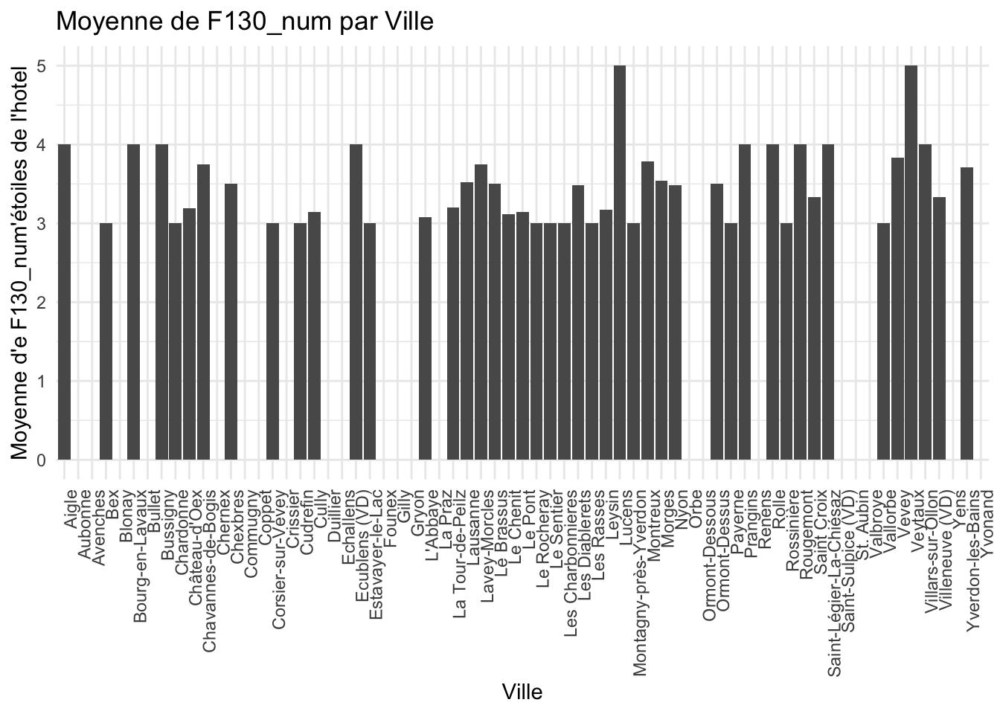

source(here::here("scripts", "setup.R"))
data <- read.csv(here("data", "TMS_dataset_Vaud_20240314_FINAL.csv"),
sep = ",")Question 4
Where did they stay? (For example: yes, they went to Montreux, but what type of accommodation, what price?
Initializations
Most Popular Destinations
resort_counts <- table(data$F105_Code)
accommodation_counts <- table(data$F125_ENG)
# Proportion
resort_counts_df <- as.data.frame(resort_counts)
resort_counts_df$Proportion <- resort_counts_df$Freq / sum(resort_counts_df$Freq)
# Plot
plot_ly(resort_counts_df, labels = ~Var1, values = ~Proportion, type = 'pie',
textinfo = 'label+percent',
insidetextorientation = 'radial') %>%
layout(title = 'Most Popular Destinations',
xaxis = list(showgrid = FALSE, zeroline = FALSE, showticklabels = FALSE),
yaxis = list(showgrid = FALSE, zeroline = FALSE, showticklabels = FALSE))Hotels Stars
data <- data %>%
mutate(F130_num = case_when(
F130 == "*****" ~ 5,
F130 == "****" ~ 4,
F130 == "***" ~ 3,
F130 == "**" ~ 2,
F130 == "*" ~ 1,
TRUE ~ NA_real_ # Pour gérer les cas où aucun des motifs ci-dessus n'est trouvé
))Average Stars per City
# Calcul de la moyenne de F130_num par F105_Code
moyenne_par_ville <- data %>%
group_by(F105_Code) %>%
summarise(Moyenne_F130_num = round(mean(F130_num, na.rm = TRUE), digits=2)) %>%
arrange(desc(Moyenne_F130_num)) # Optionnel: trier par moyenne décroissante
# Création du graphique
ggplot(moyenne_par_ville, aes(x = F105_Code, y = Moyenne_F130_num)) +
geom_col() + # Utilisation de barres pour représenter les moyennes
theme_minimal() + # Thème minimal pour le graphique
labs(title = "Moyenne d'étoiles par Ville",
x = "Ville",
y = "Moyenne d'étoiles") +
theme(axis.text.x = element_text(angle = 90, hjust = 1))Warning: Removed 22 rows containing missing values (`position_stack()`).
Number of Observations per City
# Calcul du nombre d'observations par ville (F105_Code)
observations_par_ville <- data %>%
group_by(F105_Code) %>%
summarise(Nombre_observations = n()) %>%
arrange(desc(Nombre_observations)) # Optionnel: trier par nombre d'observations décroissant
# Affichage du tableau
datatable(observations_par_ville, options = list(pageLength = 15))(()) Distribution of Stars by City
# Filtrage pour exclure les villes sans données valides dans F130_num
data_filtered <- data %>%
filter(!is.na(F130_num)) %>%
group_by(F105_Code) %>%
# Calculer la moyenne pour assurer qu'on prend en compte seulement les villes avec des données
summarise(Moyenne_F130_num = mean(F130_num, na.rm = TRUE)) %>%
filter(!is.na(Moyenne_F130_num)) %>%
arrange(desc(Moyenne_F130_num))
# Réordonner le facteur F105_Code dans le dataframe filtré selon les moyennes calculées
data$F105_Code <- factor(data$F105_Code, levels = data_filtered$F105_Code)
# Assurer que le dataframe original est filtré pour correspondre aux villes sélectionnées
data <- data %>%
filter(F105_Code %in% data_filtered$F105_Code)
# Création du graphique avec geom_density_ridges_gradient pour les villes ayant des données valides dans F130_num
ggplot(data, aes(x = F130_num, y = F105_Code, fill = ..x..)) +
geom_density_ridges_gradient(scale = 3, rel_min_height = 0.01) +
scale_fill_viridis_c(option = "C") + # Utiliser un dégradé de couleurs
labs(title = "Distribution de F130_num par Ville avec Gradient",
x = "F130_num",
y = "Ville (F105_Code)") +
theme_ridges() + theme(legend.position = "none")Warning: The dot-dot notation (`..x..`) was deprecated in ggplot2 3.4.0.
ℹ Please use `after_stat(x)` instead.Picking joint bandwidth of 0.71
(()) List of Hotels Sorted by Number of Stars
# Calcul du nombre d'observations par ville ayant une valeur dans F130_num
observations_par_ville <- data %>%
filter(!is.na(F130_num)) %>%
group_by(F105_Code) %>%
summarise(Nombre_observations = n())
# Fusionner les données pour inclure le nombre d'observations dans moyenne_par_ville
moyenne_et_nombre_par_ville <- moyenne_par_ville %>%
left_join(observations_par_ville, by = "F105_Code")
# Afficher le tableau avec datatable et ajuster les options
datatable(moyenne_et_nombre_par_ville, options = list(pageLength = 15))